A corridor plan, not simply a highway project
Route 101 was carrying several problems at once: growing traffic, serious safety concerns, difficult access to side streets and businesses, cut-through traffic on local roads, and pressure for new commercial development. The planning response treated those issues as one interconnected system rather than as isolated engineering problems.
Reduce conflict points
Address head-on crashes, sight-distance problems, turning conflicts, and unsafe access while improving the operation of key intersections and the bypass.
Manage growth along the corridor
Coordinate curb cuts, shared access, side-street connections, parking, and development review so future growth does not steadily erode corridor function.
Preserve the rural landscape
Pair roadway improvements with landscape design, gateway treatments, environmental constraints, and attention to the scenic character of southern New Hampshire.
Sequence change over time
Organize improvements into short-, medium-, and long-term actions coordinated among municipalities, the regional planning commission, and state transportation agencies.
Build the plan from a broad corridor inventory
The study combined traffic operations with economic development, land use and zoning, conservation land, utilities, corridor visual analysis, natural systems, historic resources, and community input. That breadth allowed transportation recommendations to be tested against the physical and civic character of the places they would affect. A visual analysis documented how the experience of Route 101 changes from town to town. Photographic sequences recorded roadway width, vegetation, development pattern, views, and the relationship between the highway and its surrounding landscape
Explore bridge form, materials, and civic identity
A series of bridge alternatives tested how the crossing could function as both transportation infrastructure and a recognizable civic element. The studies explored different structural forms, arch profiles, abutment treatments, stone and concrete materials, railing designs, colors, landscaping, and architectural details to understand how the bridge could relate to its wooded setting while creating a distinctive gateway.
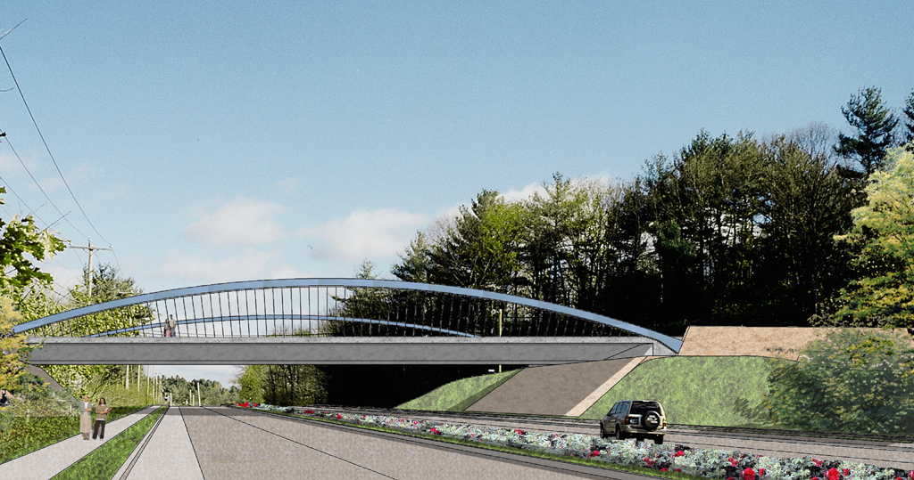
Slender arch + landscaped abutments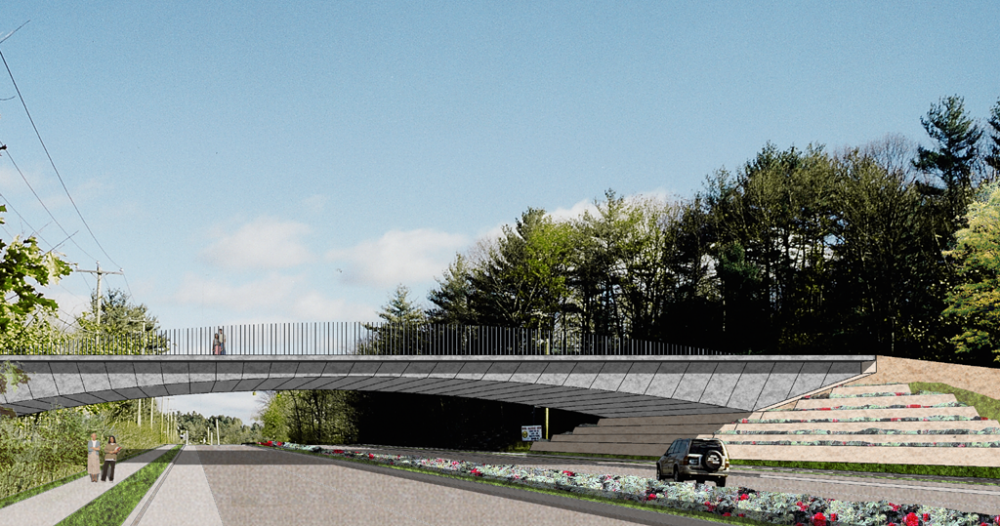
Faceted deck + terraced landscape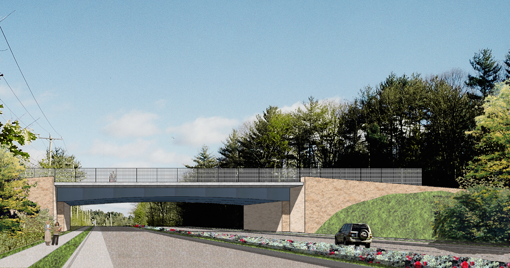
Simple span + restrained detailing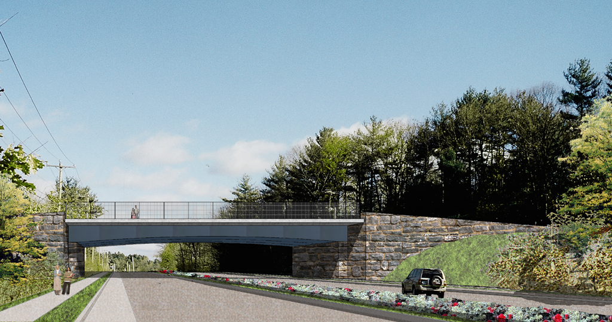
Granite abutments + landscape integration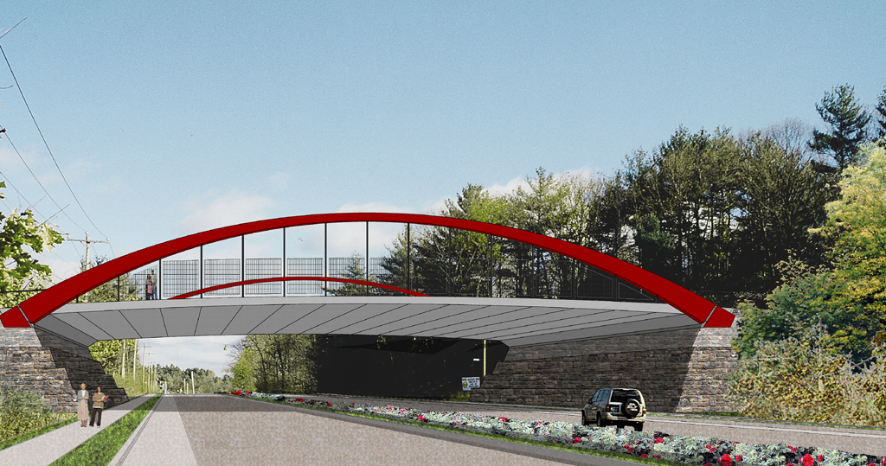
Red arch + gateway expression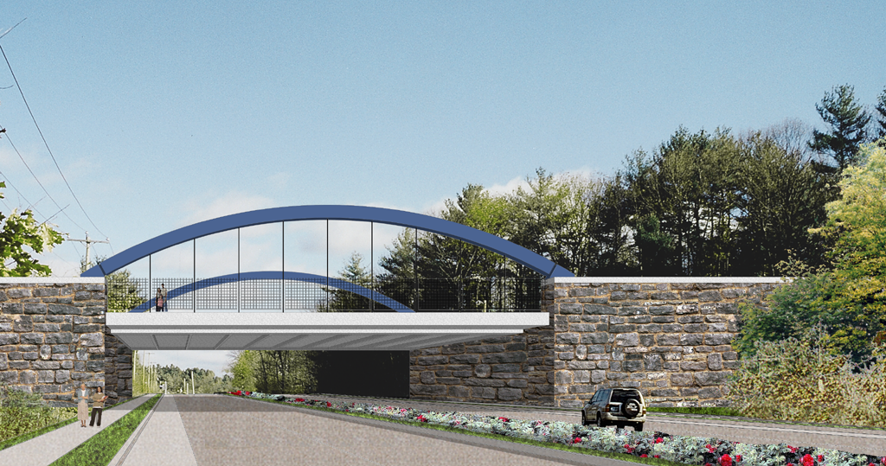
Blue arch + stone walls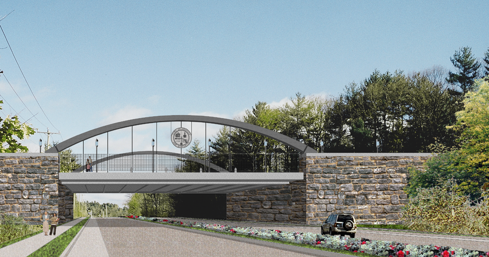
Civic detailing + town identityUse design guidelines to reinforce town character
Commercial architectural and signage guidelines translated the corridor plan’s broader goals into practical design direction for individual development projects. The guidelines address building orientation, pedestrian scale, massing, entrances, materials, architectural character, lighting, and signage so new development can respond to Bedford’s existing context while improving the visual and pedestrian quality of the Route 101 corridor. :contentReference[oaicite:0]{index=0}
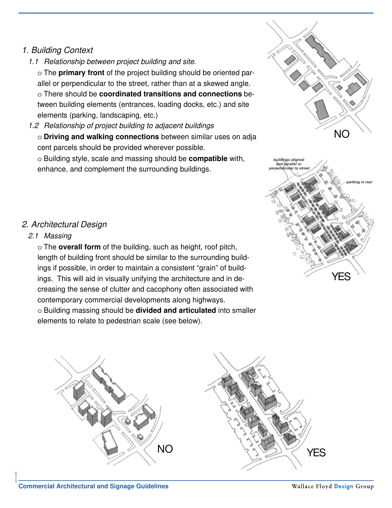
Building context + massing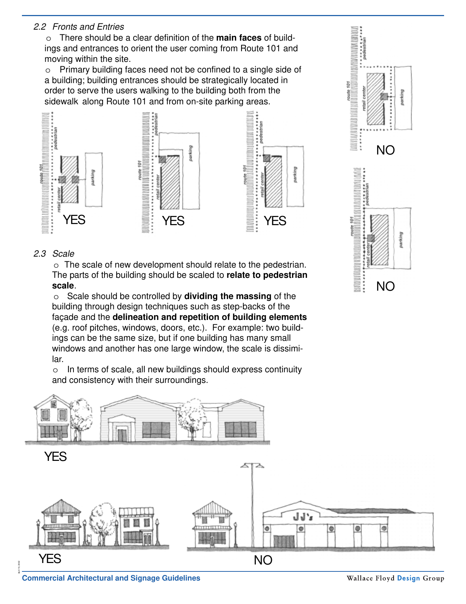
Fronts, entries + pedestrian scale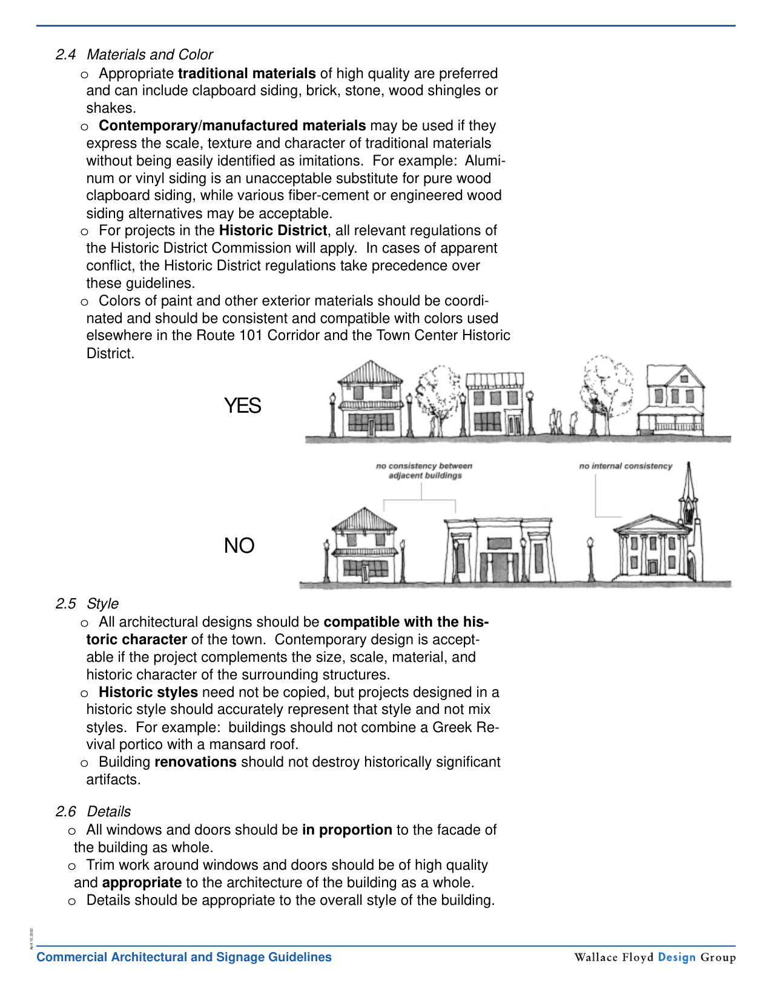
Materials + architectural character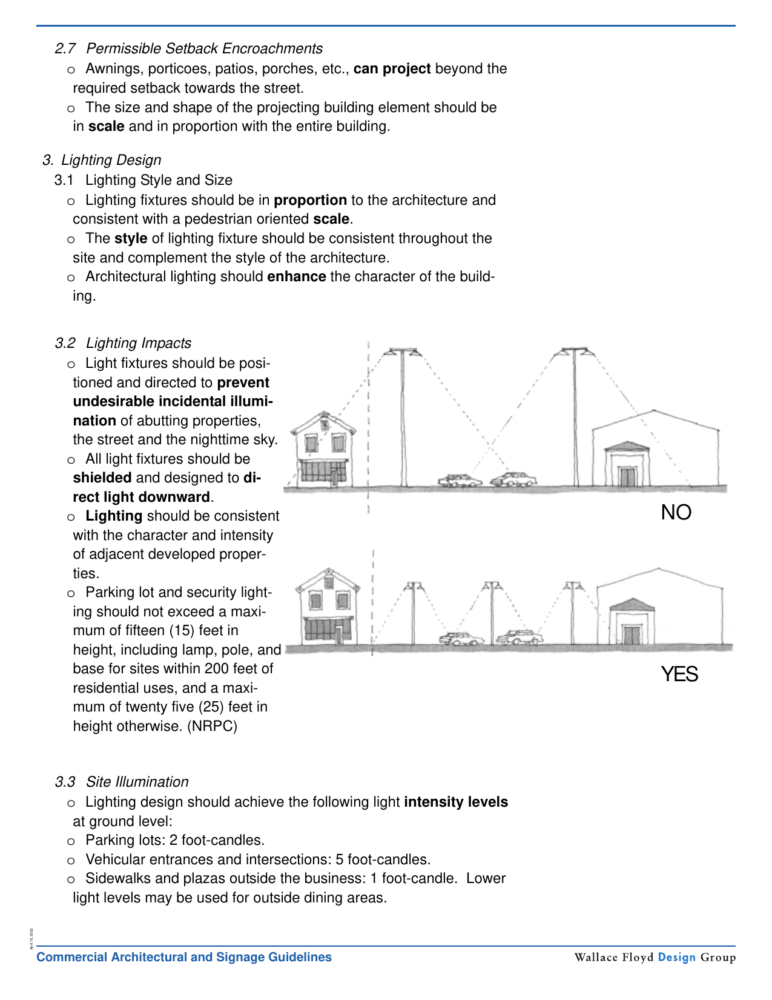
Lighting + pedestrian environment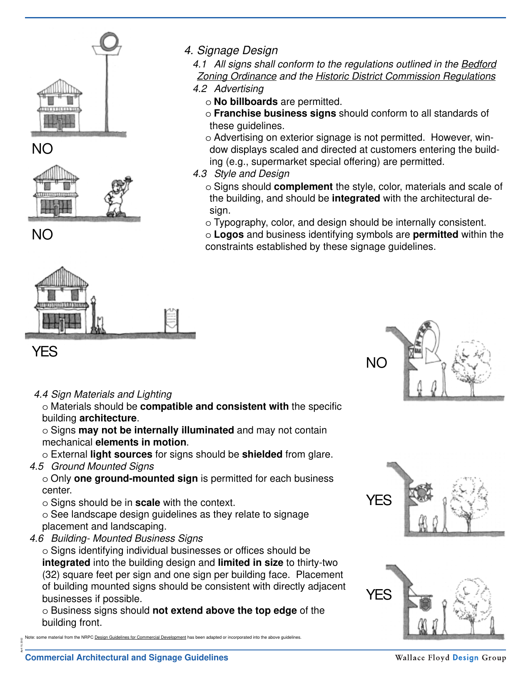
Signage + visual coordinationProject framework
The Route 101 Corridor Plan shows how transportation planning can operate at the scale of place. Traffic engineering establishes the safety and capacity needs; land-use and access-management tools reduce future conflict; environmental and visual analysis identify what should be protected; landscape and site-design guidance shape the public edge; and implementation strategy connects near-term decisions to a long-range corridor structure.